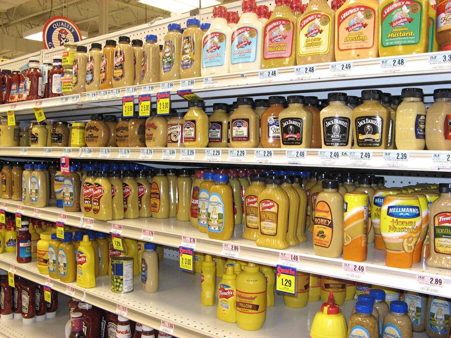
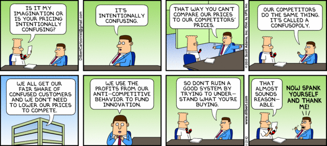
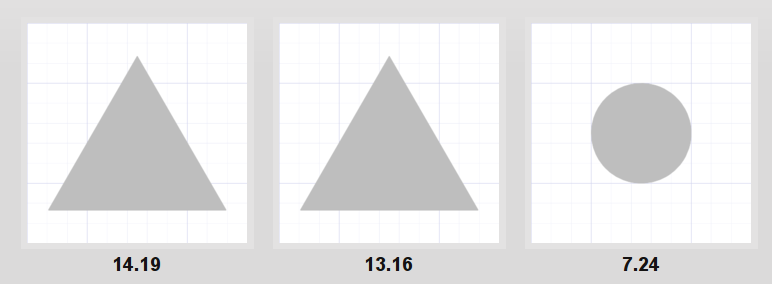

Competition vs. confusopoly
We know that having choices is great, but we also know that too much choice is not a good thing. Try to enter an online shop to get hold of a mobile phone – or, worse, a mobile phone tariff plan. Or, easier yet, just pop by your local supermarket and look at the mustard section.

We also know that one of the easiest ways to cut ourselves loose of the jungle of confusing offers and of the resulting choice angst is to just pick one offer and be done with it.
But let’s assume firms know this: they know that, overwhelmed by choice, we will not choose and compare, but rather pick one without much reasoning. They might be tempted to exploit this finding. They might intentionally make price structure, product shapes and attribute, everything they have in control, more complex, more difficult to evaluate, in order to keep prices higher – what does a price tag tell you anyway, if it’s so difficult to compare it with others? There could even be some form of collusion: instead of competing on price, firms might all together confuse consumers and get away with higher prices. That’s what in the Dilbert world has been dubbed a confusopoly.

And indeed some recent lab experiments (Kalaici and Potters, 2011) indicate that there are profits to be made by confusing consumers, the mustard picture above seems to be telling the same story, and the very influential Nudge book by Thaler and Sunstein tries to tell us how to correct this and build ‘better’ choice architectures.
But look back at the mustard picture. There is more to say about it than ‘there is too much choice’. Most offers, even by different brand, sport roughly the same shape and size; many of them share the same container and cork colour, some even the label style. It seems that firms want to confuse consumers, but up to a point: they also want their offers to be comparable to the ones of competitors. Imagine offers like ‘we give whatever firm X is giving you, plus 10% more product’, or ‘at 10% lower price’. Online mobile phone plans are usually framed this way.
It looks as if firms have two competing sets of incentives here: on the one hand, confusing consumers is a way of avoiding costly price wars and make profits; but on the other, closely mimicking your competitor’s offer and undercut him might also work. Firms might follow the road to confusopoly or the the one of competition. What is the best way?
Well, it depends heavily on how consumers make choices. Let’s imagine we have firms selling homogeneous goods: mobile phone traffic. Let’s call the way a product is presented a ‘standard’: the complexity of the offer, in how many dimensions it is split (SMS cost, cost-per-minute, data cost, flat fees, etc…), and all other details. Alexia Gaudeul and Robert Sugden proved (working paper; Economica) that if consumers prefer to choose ‘common standards’, i.e. restrict their choice to the items that are easily comparable and disregard the other offers, then a confusopoly cannot be formed or sustained, as firms prefer to offer ‘common standards’ and compete on price.
Why should consumer prefer ‘common standards’? Well, for one, within common standards it is way easier to assess which offer is the relative best; the chosen item might not be the absolut best, but it’s at least better than something. That’s a close cousin to what is called the decoy effect (check Ariely’s experiment on The Economist subscription fees). Moreover, firms choosing a common standard might signal their willingness to compete on price, while the ones that do not might signal their willingness to confuse consumers.
But do consumers really prefer easily comparable offers? How much? To what extent they use the clue offered by the existence of a ‘common standard’ to restrict their focus?
Alexia Gaudeul and I ran an experiment to test this. Assume you have to buy paint, to renovate a wall in your house. All the shops sell the same quality of paint, except that in the strange world you live in the offers do not tell you the unit price of paint (e.g. € per painted meter) but show you visually how much of your wall you could cover with the bucket costing X. Firms differ in the way they present this information to you: some choose triangles, some squares some circles, and of different sizes and prices. A typical shop in this world is a collection of shapes on a white background, showing you the dimension of your beloved wall.

As you see, two offers share the same standard. And the middle one clearly dominates the left one. It is not easy to tell if the middle one is better than the right one, but one clear way of restricting choice is to eliminate dominated offers. Theoretically, the higher your perception errors, the more you should rely on the information conveyed by common standard offers. In other words, a very precise consumer might rely on his judgment; a very imprecise one would on average be better off by choosing the center triangle.
We exposed our subjects to many such choices. Some had a common standard, some did not; some had 3, some 6 products on display. We controlled for their shape comparison, math, logical abilities.
In our world, consumers do make use of common standard information. Not all consumers, not at all times, in different ways, and especially less so when 6 offers are on display – a lot of choice is indeed sometimes too much. But they do. And just enough that a firm choosing a common standard offer and undercutting the price of the competitor would make more profits than the confusing firms. So no confusopoly can be stable in our buy-the-paint-in-shapes world. It is good to confuse consumers, but it is better to directly compete by offering clear alternatives.
Our buy-paint-as-a-shape might sound as an unrealistic world. But it is a world in which many reasons for restricting choice to common standard offers are ruled out by definition; if at all this strengthens our result. For example, our prices are random, while in the real world a firm mimicking someone else’s standard is signaling to be willing to compete and hence should price lower. Plus, there are no ‘firms’ in our setting, but just random offers: learning by firms could bring them to choose to stick to common standards, thus pushing also consumers to do so.
So we know that consumers do make use of common standard information. What we still do not know is whether firms would move along the path to competition or to confusopoly. Theoretically, they should go for competition – confusopoly is not stable. Empirically, we still don’t know. But while we are busy investigating just that, you might give a look at our paper.
Back to top